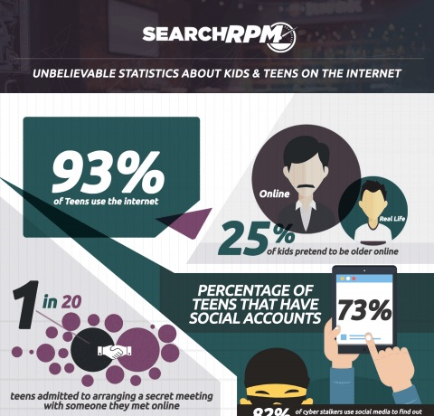

How to Find Your Own Space
Find a space where you feel that you can connect creativity. After all, the purpose of involving oneself into a social webspace is to communicate and share ideas with others, without feeling the pressure or judgement related to uninclusivity. Be sure to find a space that accepts your personality, that way, you can thrive creativly in a world that you feel supported by. Don't be shy to collaborate and share ideas, as long as its in a safe and secure environment!
